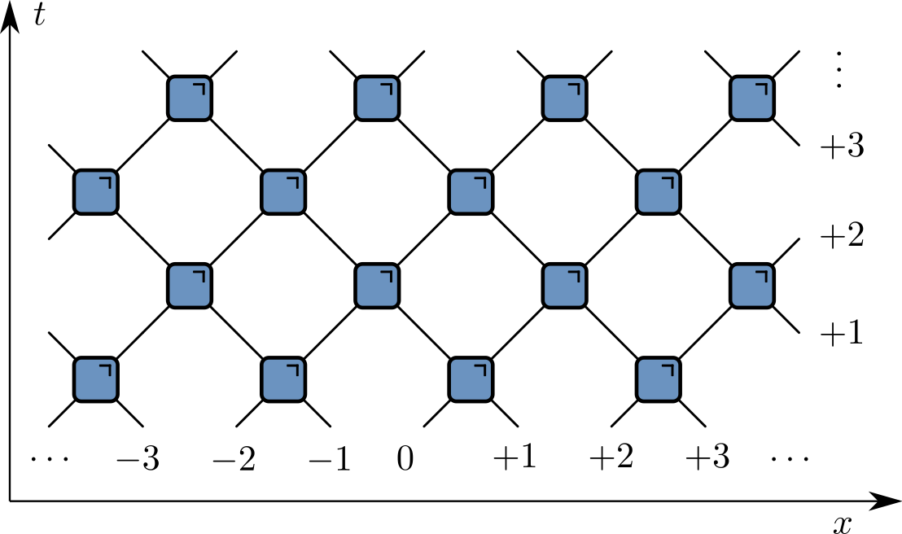
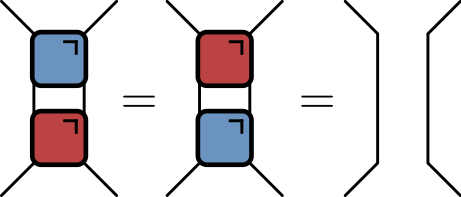
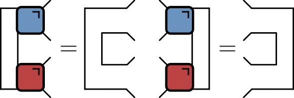
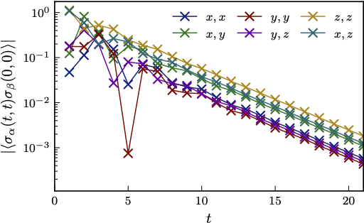
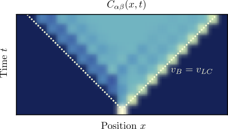
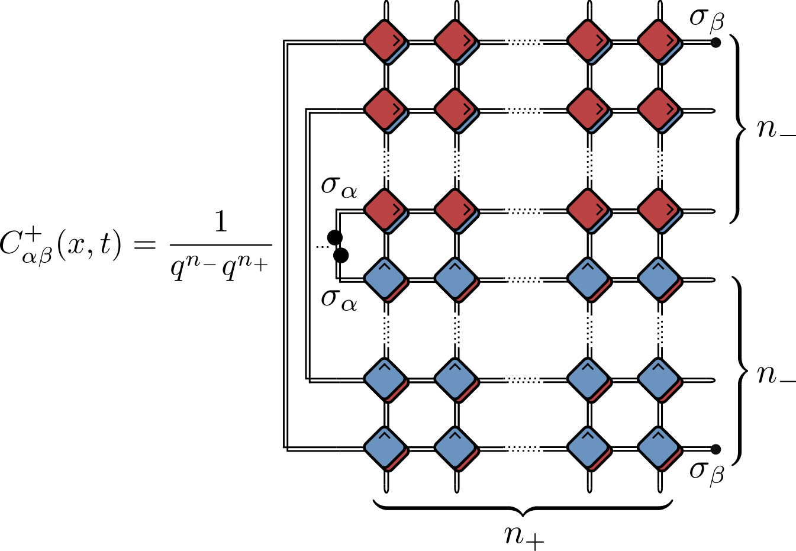
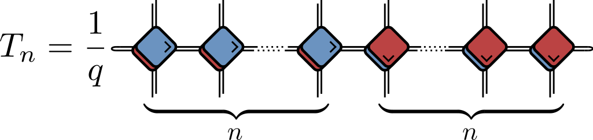
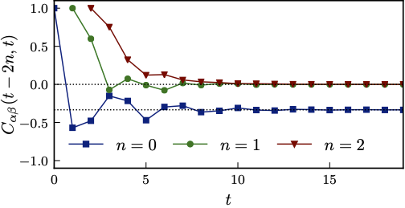
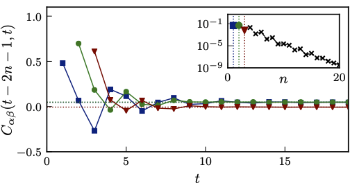

Quantum Circuits of Dual Unitary Gates
Sarang Gopalakrishnan and Austen Lamacraft
University of Cambridge
January 28, 2021
\[
\nonumber
\newcommand{\br}{\mathbf{r}}
\newcommand{\bR}{\mathbf{R}}
\newcommand{\bp}{\mathbf{p}}
\newcommand{\bk}{\mathbf{k}}
\newcommand{\bq}{\mathbf{q}}
\newcommand{\bv}{\mathbf{v}}
\newcommand{\bx}{\mathbf{x}}
\newcommand{\bz}{\mathbf{z}}
\DeclareMathOperator*{\E}{\mathbb{E}}
\]
Circuits

Unitarity and dual unitarity


- For qubits dual unitary gate has 14 parameters (c.f. 16 for \(U(4)\)!)
Outline
- Origins of dual unitarity: entanglement
- Correlation functions
- OTOCs
Origins of dual unitarity
Kicked Ising Model
- Time dependent Hamiltonian with kicks at \(t=0,1,2,\ldots\).
\[
\begin{aligned}
H_{\text{KIM}}(t) = H_\text{I}[\mathbf{h}] + \sum_{m}\delta(t-n)H_\text{K}\\
H_\text{I}[\mathbf{h}]=\sum_{j=1}^L\left[J Z_j Z_{j+1} + h_j Z_j\right],\qquad H_\text{K} &= b\sum_{j=1}^L X_j,
\end{aligned}
\]
- “Stroboscopic” form of \(U(t)=\mathcal{T}\exp\left[-i\int^t H_{\text{KIM}}(t') dt'\right]\)
\[
\begin{aligned}
U(n_+) = \left[U(1_+)\right]^n,\qquad U(1_-) = K I_\mathbf{h}\\
I_\mathbf{h} = e^{-iH_\text{I}[\mathbf{h}]}, \qquad K &= e^{-iH_\text{K}},
\end{aligned}
\]
Entanglement Growth for Self-Dual KIM
\[
\lim_{L\to\infty} S^{(n)}_A(t) =\min(2t-2,N)\log 2,
\]
- Any \(h_j\); initial \(Z_j\) product state

Entanglement Spectrum
- Rényi entropies depend on eigenvalues of reduced density matrix
\[
S^{(n)}_A = \frac{1}{1-n}\log \text{tr}\left[\rho^n\right]=\frac{1}{1-n}\sum_\alpha \lambda_\alpha^n
\]
- For SDKIM have \(2^{\min(2t-2,N)}\) non-zero eigenvalues all equal
\[
\lambda_\alpha = \left(\frac{1}{2}\right)^{\min(2t-2,N)}
\]
KIM as a circuit

\[
\begin{aligned}
\mathcal{K} &= \exp\left[-i b X\right]\\
\mathcal{I} &= \exp\left[-iJ Z_1 Z_2 -i \left(h_1 Z_1 + h_2 Z_2\right)/2\right].
\end{aligned}
\]
Graphical representation of density matrix
- \(\rho(t) = U\rho_0 U^\dagger\), working from middle out
Folded picture
- Reduced density matrix: trace over all but \(N\) sites (here \(N=6\))
Go further with dual unitarity?
Initial conditions
- For SDKIM we have in addition
- Just the thing for \(\rho_0 = \otimes_j |Z_j\rangle\langle Z_j|\)!
…Using dual unitary gates
\[
\overbrace{\frac{\mathbb{1}}{2}\otimes \frac{\mathbb{1}}{2} \cdots }^{t-1} \otimes\overbrace{|Z_1\rangle\langle Z_1|\otimes |Z_2\rangle\langle Z_2| \cdots }^{N-2t+2 } \otimes \overbrace{\frac{\mathbb{1}}{2}\otimes \frac{\mathbb{1}}{2} \cdots }^{t-1}
\]
Result for RDM
- Spectrum of RDM same as spectrum of
\[
\overbrace{\frac{\mathbb{1}}{2}\otimes \frac{\mathbb{1}}{2} \cdots }^{t-1} \otimes\overbrace{|Z_1\rangle\langle Z_1|\otimes |Z_2\rangle\langle Z_2| \cdots }^{N-2t-2 } \otimes \overbrace{\frac{\mathbb{1}}{2}\otimes \frac{\mathbb{1}}{2} \cdots }^{t-1}
\]
- \(2^{\min(2t-2,N)}\) non-zero eigenvalues all equal to \(\left(\frac{1}{2}\right)^{\min(2t-2,N)}\)
More general initial conditions
Piroli, et al., (2020) considered 2-site MPS initial conditions that allow for solution in similar way
For \(2t>N\) result is the same: \(\infty\)-temperature RDM
At earlier times structure of initial state important
Using unitarity

“Folded” picture

- Later operator must be in “future light cone” of earlier
On the light cone

Light cone quantum channel

\[
\begin{align}
c_\nu^{\alpha\beta}(\nu t,t) = \frac{1}{q} {\rm tr}\left[\mathcal M_{\nu}^{2t}(a^\beta)a^\alpha\right]\\
\mathcal M_{+}(a) = \frac{1}{q} {\rm tr}_1\left[U^\dagger (a\otimes\mathbb{1}) U\right]
\end{align}
\]
- Unitarity means map is CPTP and unital (identity fixed)
- See Bertini, Kos, Prosen (2019) for dual unitary case, but construction is general
‘Typical’ correlations

- Generic: decay governed by dominant eigenvalue of channel
- Can evaluate correlations inside light cone, just need a bigger channel (see later)!
Dual unitary case
- Unitarity implies future and past lightcones up and down
- Dual unitarity implies future and past left and right
- Conclusion: correlations only on light cone
Bertini, Kos, Prosen (2019)
OTOCs
\[
C_{\alpha \beta}(x,t) = \langle \sigma_{\alpha}(0,t) \sigma_{\beta}(x,0) \sigma_{\alpha}(0,t) \sigma_{\beta}(x,0) \rangle.
\] - \(C_{\alpha \beta}(|x|>t,t)=1\) since \(\left[\sigma_{\alpha}(0,t),\sigma_{\beta}(x,0)\right]=0\) for \(|x|>t\)
For smaller \(|x|\) OTOC deviates from 1.
Limiting value of \(|x|/t\) where this occurs defines butterfly velocity
Example: random unitary circuits with local dimension \(q\) have \[
v_\text{B} = \frac{q^2-1}{q^2+1}
\] \(v_\text{B}\to 1\) as \(q\to\infty\)
Maximum velocity quantum circuits
- Which circuits have the largest butterfly velocity \(v_\text{B}=1\)?
- Natural guess: dual-unitary circuits!
OTOC for SDKIM

(and no broadening)
Fold it up…
- Light cone coordinates \(n_+ = (t+ x)/2\), \(n_- = (t- x+2)/2\)

\[
\begin{align}
C^{+}_{\alpha \beta }(x,t) = \left(L(\sigma_{\alpha})\right|\left(T_{n_-}\right)^{n_+}\left|R^{-}(\sigma_{\beta})\right), \nonumber\\
\end{align}
\]
- This is for \(x-t\) even, similar expression for \(x-t\) odd
Transfer matrix

Using only unitarity
- Find eigenstate of transfer matrix with eigenvalue one
- Show that \(\lim_{m\to \infty} \left(L_n(\sigma_{\alpha})\right|\left(T_n\right)^m\left|R^{\pm}(\sigma_{\beta})\right) = 1\)
This is the value outside light cone, so \(v_\text{B}<1\) generically
\(v_\text{B}=1\) requires additional eigenstates with eigenvalue one
Using dual unitarity…
- Find \(n+1\) eigenvectors with eigenvalue 1
- For even \(n\), \(C^{+}_{\alpha \beta}(x,t)\) vanishes inside light cone \[
\begin{align}
\lim_{(x+t) \to \infty }C^{+}_{\alpha \beta}(x,t) =
\begin{cases}
-\frac{1}{q^2-1} \qquad &\text{if} \quad x=t,\\
0 \qquad &\text{if} \quad x \neq t.
\end{cases}
\end{align}
\]

For odd \(n\), \(C^{-}_{\alpha \beta}(x,t)\) can be found in terms of channel \(\mathcal M_{\pm}(\cdot)\) describing light cone correlator
Range of behaviour moving inside light cone

Further special cases…
Integrable SDKIM: Exponentially many eigenvectors with eigenvalue one. OTOC immediately saturates to constant value inside light cone.
Are all maximal velocity circuits dual unitary? No! Found a kicked XY model with \(v_\text{B}=1\)
Conclusion
Dual unitary circuits are a big solvable family with a diverse phenomenology that includes integrable and chaotic behaviour…
… but maybe not that diverse for such a big family! \(v_\text{B}=1\) always, for example
Still more to do: effect of measurements, coding, computational complexity…